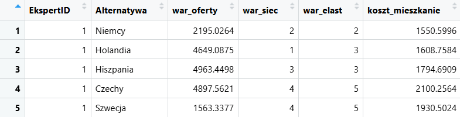
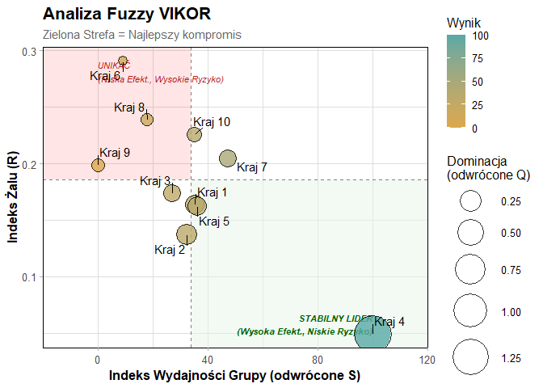

Przedstawienie pakietu
ITJobAbroadR w prostym języku
Pakiet ITJobAbroadR to narzędzie, które pomaga w wyborze kraju na podstawie wielu kryteriów. Przetwarza dostarczone dane (tabelę z alternatywami i kryteriami) oraz zwraca ranking krajów.
Do analizy danych zostały użyte metody do wielokryterialnej analizy decyzji (MCDA). Wizualizacją wyników jest wykres bąbelkowy.
Problem
Porównanie krajów do wyboru najkorzystniejszego miejsca do szukania pracy
Użytkownik
Informatyk, który szuka wygodnego miejsca do pracy zdalnej poza Polską - osoba, która planuje pracę za granicą i chce porównać wybrane kraje
Wynik
Uporządkowany ranking krajów z przedstawieniem, które są najlepsze do podjęcia pracy w IT według oczekiwań użykownika
Dane użyte w pakiecie
Dane wejściowe
Do wykonania analizy danych konieczne są surowe dane ankietowe. Zbiór danych składa się z 3 informacji - są to:
- 1. Opinie ekspertów - wygenerowane losowo oceny krajów wystawione na podstawie kryteriów. Symulują odpowiedzi 5 ekspertów – osób, które pracują za granicą lub szukali takiej pracy.
- 2. Alternatywy - lista 10 krajów, które oferują pracę zdalną dla informatyków. Zostały one wybrane na podstawie często powtarzających się preferencji cyfrowych nomadów (osób, które pracują zdalnie z różnych miejsc na całym świecie).
- 3. Kryteria - warunki, na podstawie których stawiane są oceny
ekspretów.
W skład każdego kryterium wchodzi kilka podkryteriów - przykładowo kryterium
Warunkizawiera w sobie zmienne określające oferty pracy, jakość połączenia sieciowego oraz elastyczne godziny pracy.

Kryteria i ich typy
Przedstawieniem wymagań, które wpływają na decyzję wyboru kraju są kryteria.
| Kryterium | Opis | Typ |
|---|---|---|
| Warunki | Uwarunkowania pracy, jak np. liczba ofert, jakość łącza internetowego i elastyczność godzin pracy | max |
| Koszt | Łączny średni koszt zakwaterowania, jedzenia i transportu | min |
| Atrakcyjność | Ogólna przystępność i atrakcyjność kraju dla obcjokrajowców | max |
| Rozwój | Możliwości rozwoju zawodowego i osobistego | max |
| Strefa czasowa | Różnica strefy czasowej względem Polski | min |
Każde kryterium ma określoną wartość min lub
max. Wartość min
oznacza typ straty, czyli dla kryterium o tym typie oceny niższe są lepsze. Natomiast wartość
max to typ zysku – z nim większe oceny są lepsze.
Rozmycie danych
Każda opinia zawiera w sobie jakiś poziom niepewności. Dlatego aby dostać jak najdokładniejszy ranking krajów trzeba tą niepewność w pakiecie uwzględnić.
Pakiet "rozmywa" oceny i dla każdej z nich tworzy Trójkątną Liczbę Rozmytą (TFN)
(l, m, u): dolną, środkową i górną wartość.
Przykład: jeśli ekspert dał ocenę 2, to pakiet pamięta, że realna ocena może być trochę niższa albo trochę wyższa.
TFN = (x - 1, x, x + 1), ograniczone do skali 1-9
wynik ostry = (l + 4m + u) / 6
Wagi kryteriów
Pakiet uwzględnia system wyznaczania wag metodą Best-Worst (BWM). Metoda wymaga wskazania najlepszego i najgorszego kryterium przez użytkownika.
Dzięki tej metodzie otrzymywane są subiektywne wagi kryteriów. Wynikają one z preferencji ekspertów i porównań kryteriów, a nie z surowego zbioru danych.
Możliwe jest także wyznaczenie wag obiektywnych na podstawie danych. Entropia Shannona analizuje jak bardzo zmieniają się wartości poszczególnych kryteriów między krajami. Jeśli kryterium ma wysokie zróżnicowanie wartości, to otrzymuje większą wagę.
Wyniki
Wizualizacja wyników
Ranking główny
Metoda Fuzzy VIKOR analizuje alternatywy i wybiera kompromisowe rozwiązanie. Tworzy ranking krajów – na najwyższej pozycji znajduje się kraj, który ma dobry wynik ogólny i nie posiada krytycznej wartości w żadnym kryterium.
Dla łatwiejszego zrozumienia wyników użyto wykresu bąbelkowego stosowanego w analizie cIPMA. Na wizualizacji rankingu kraje z większymi wartościami leżą w ćwiartce najlepszego kompromisu. Kraj najdalej wysunięty jest najlepszym wyborem.
Najlepsza alternatywa
Kraj 4 - Hiszpania

Sprawdzenie poprawności głównej metody
Meta-ranking
W porównaniu z wynikami otrzymanymi przez analizę metodą Fuzzy MULTIMOORA, ranking krajów jest średnio stabilny. Silne podobieństwo między rankingami zachodzi w kraju na najwyższej pozycji i w 3 najsłabszych krajach. Daje to pewność, że alternatywy z krytycznymi słabościami zostały odrzucone.
Czy ranking jest stabilny?
Tak
Jak spójne są rankingi?
0.66
Odtworzenie pakietu
Instalacja i uruchomienie pakietu
Jak odtworzyć analizę
Poniżej znajduje się kod przedstawiający po kolei etapy instalacji i uruchomienia pakietu.
# instalacja
devtools::install_github("ominell/ITJobAbroadR")
library(ITJobAbroadR)
# dane i analiza
data("mcda_dane_surowe")
skladnia <- "Warunki =~ war_oferty + war_siec + war_elast;
Koszt =~ koszt_mieszkanie + koszt_jedzenie + koszt_transport;
Atrakcyjnosc =~ atr_kultura + atr_jezyk + atr_obcy + atr_zdrowie;
Rozwoj =~ rozwoj_zaw + rozwoj_osob;
Strefa_czasowa =~ roznica_czasu"
macierz <- przygotuj_dane_mcda(dane, skladnia, kolumna_alternatyw = "Alternatywa")
wynik <- fuzzy_vikor(macierz,
typy_kryteriow= c("max","min","max","max","min"),
bwm_kryteria = c("Warunki", "Koszt", "Atrakcyjnosc", "Rozwoj", "Strefa_czasowa"),
bwm_najlepsze = c(1,3,2,6,8),
bwm_najgorsze = c(8,5,6,3,1))
# wizualizacja wyników
plot(wynik)
tabela_apa(wynik)